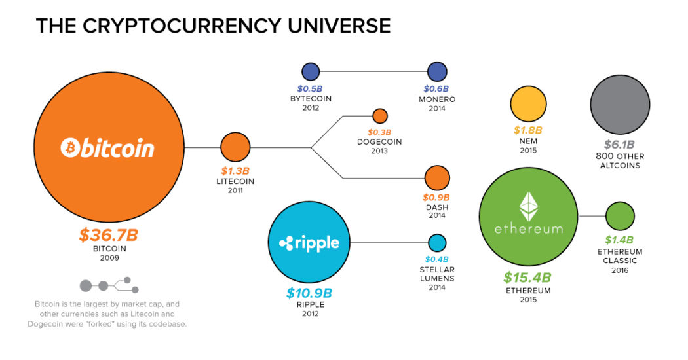
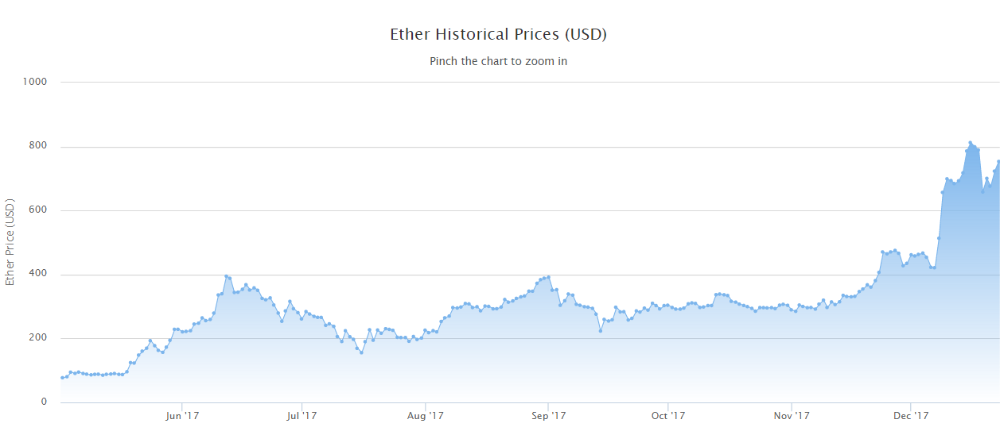

# Predict Ether Price with a LSTM RNN
## Stephanie Marker > github.com/smarker > stephaniemarker.com > stephanie.marker93@gmail.com > software engineer at <svg xmlns="http://www.w3.org/2000/svg" version="1.1" height="55" width="55"> <rect height="55" width="55" fill="#f3f3f3"/> <rect height="25" width="25" x="2" y="2" fill="#F35325"/> <rect height="25" width="25" x="28" y="2" fill="#81BC06"/> <rect height="25" width="25" x="2" y="28" fill="#05A6F0"/> <rect height="25" width="25" x="28" y="28" fill="#FFBA08"/> </svg>
### June 2017 
## Ether Price History 
## Algorithm Overview 1. Analyze data for patterns 2. Create stationary timeseries dataframe 3. Normalization and feature selection 4. Split data into train and test 5. Test with multiple models (ARIMA, LSTM RNN, etc.) 6. Verify results
## Patterns In the Data | | Date | Price | eth\_tx | eth\_address | eth\_supply | ...| | - | ---------- | ------ | ------- | ------------ | ----------- |----| | 0 | 2017-12-18 | 785.99 | 984021 | 15048543 | 9.6364e7 |... | | 1 | 2017-12-17 | 717.71 | 876574 | 14830225 | 9.6343e7 |... | |...| ... | ... | ... | ... | ... |... | |289| 2017-3-1 | 77.53 | 112202 | 1663543 | 9.1228e7 |... | explain why chose may - dec [just put a chart] (before may it was flat so didnt need everything) noticed that some numbers were very large or small (need normalization) price tended to increase over time
## Create Stationary Timeseries Dataframe
## Normalization and Feature Selection
## Split Data into Train and Test say number of train and test explain how it doesnt overfit provide that term you forget the name for
## LSTM RNN explain what this is (might need another slide)
## Verify Results doesn't overfit because of train and test error curves show chart of results
## Resources Etherscan github repo with my report ml udacity class